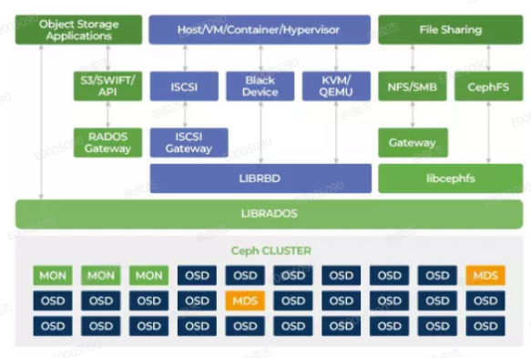
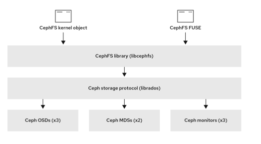

- librados是Ceph存储集群协议，由文件、块和对象存储共用。
- RADOS采用C++开发，所提供的原生librados API包括C和C++两种。物理上，librados和基于其上开发的应用位于同一台机器，因而也被称为本地API。应用调用本机上的librados API，再由后者通过socket与RADOS集群中的节点通信并完成各种操作。
创建用户并输出
- ceph auth get-or-create client.yjj mon ‘allow r’
osd ‘allow *’ mds ‘allow *’ -o ceph.client.client.yjj.keyring
块存储
- RBD（Reliable Block Device）组件是一种构建在RADOS集群之上为客户端提供块设备存储接口接口的中间层，提供的块存储服务可以形成一个裸磁盘，提供格式化、映射的功能，挂载到服务器中。都通过了librados
- 这类的客户端包括虚拟化KVM和云计算OpenStack。
使用
当ceph集群搭建好以后，如果在其他的主机上要使用，则必须要安装好ceph的客户端（ceph-common），才能挂载ceph的rbd块。
- （密钥文件挂载客户端需要安装ceph-common）
- 它将提供基本的 ceph 和 rados 命令，以及其他命令，如 mount.ceph 和 rbd。
客户端访问RBD的方式
- 通过内核模块rbd.ko将块存储映射成本地的一块磁盘，例如/dev/vdbx等等，可以进行格式化和分区。
- 内核访问流程
- 客户端可以通过内核模块挂载rbd使用，客户端使用rbd块设备就像使用普通硬盘一样，可以对
其进行格式化然后使用.
- 通过librbd接口，KVM虚拟化就是使用这种接口。
- 应用调用librbd提供的接口，来操作ceph的块存储。
- Librbd 是Ceph提供的块存储接口的抽象，它提供C/C++、Python等多种接口。对于C++，最主要的两个类就是RBD 和 Image。 RBD 主要负责创建、删除、克隆映像等操作，而Image 类负责映像的读写等操作。
- 通过内核模块rbd.ko将块存储映射成本地的一块磁盘，例如/dev/vdbx等等，可以进行格式化和分区。
创建完RBD块存储类型的存储后，从块存储中映射出来的裸磁盘，如果想要被集群之外的其他服务器连接使用，该服务器需要具备以下三个条件：
- 该服务器需要安装RBD组件。
- 在要连接使用RBD的服务器上，需要安装Ceph的RBD组件，通常是librbd库和相关的工具。这可以通过在服务器上安装Ceph的客户端软件包来完成。具体的安装命令取决于服务器所使用的操作系统。
- 该服务器的网络需要与Ceph集群的Public网络互相通信。
- Ceph集群的keyring文件要拷贝到该服务器中。
- 该服务器需要安装RBD组件。
Ceph集群的RBD块存储通常情况下是给虚拟化集群做底层存储使用，有专门的接口连接，如果想单独为某个服务器挂载块存储虚拟出来的磁盘，就需要先具备以上的三个条件。
单独服务器挂载块存储的磁盘一般都是通过内核级别进行挂载。
RBD存储是建立在Pool资源池中的，一个Pool资源池中可以创建多个RBD块存储设备。
通信流程
- 客户端写数据osd过程：
- 采用的是librbd的形式，使用librbd创建一个块设备，向这个块设备中写入数据。
- 在客户端本地同过调用librados接口，然后经过pool，rbd，object、pg进行层层映射,在PG这一层中，可以知道数据保存在哪3个OSD上，这3个OSD分为主从的关系。
- 客户端与primay OSD建立SOCKET 通信，将要写入的数据传给primary OSD，由primary OSD再将数据发送给其他replica OSD数据节点。
架构

文件存储
- cephfs支持以内核模块方式加载也支持fuse方式加载。无论是内核模式还是fuse模式,都是通过调用libcephfs库来实现cephfs文件系统的加载，而libcephfs库又调用librados库与ceph集群进行通信，从而实现cephfs的加载。
Ceph支持两种类型的客户端，一种是基于内核模块ceph.ko，这种需要客户端安装ceph-common程序包，并在/etc/ceph/目录下有ceph.conf集群配置文件和用于认证的密钥文件。
另外一种客户端为FUSE客户端，当有些操作系统无法使用ceph.ko内核的时候就可以使用此客户端连接。要求需要安装ceph-fuse程序软件，该客户端也需要从从/etc/ceph目录加载ceph集群配置文件和keyring文件进行连接。

CephFS 客户端代表使用 CephFS 的应用执行 I/O 操作，如用于 FUSE 客户端的 cephfuse，kcephfs 用于内核客户端。CephFS 客户端向活跃的元数据服务器发送元数据请求。为返回，CephFS 客户端了解文件元数据，可以安全地开始缓存元数据和文件数据。
挂载的linux 版本，表示内核支持cephfs
在Linux内核2.6.34和以后的版本中添加了对Ceph的支持。
用户态挂载表示，文件系统通过安装fuse工具 挂载在用户态，而不在内核。内核为统一的FUSE模块。
通信流程
- fuse进行挂载cephfs，因为用户态的客户端才会调用osdc，如果使用内核态的客户端的话，是不会经过osdc代码的，会走内核的一个osd client代码，估计功能跟osdc类似，不过内核的osd client的缓存是使用的内核中的一些缓存机制。
- 参考
ganesha
参考1
参考2
参考3
nfs-ganesha开始支持ceph，ganesha通过两种方式支持将ceph导出为nfs。一种通过rgw，一种通过cephfs，FSAL_RGW调用librgw2将NFS协议转义为S3协议再通过RGW存入到Ceph中，FSAL_CEPH 调用libcephfs2将NFS转义为Cephfs协议再存入到Ceph 中,但之前都是命令行方式的支持，在Ceph Nautilus中Ceph Dashboard现在也支持配置这两种方式的NFS。
SMB
- 使用samba服务建立起windows客户端和ceph集群的cephfs文件共享的桥梁
#客户端WIN client–(SMB)–>
#存储samba->libvfs_module_ceph.so->libcephfs.so->MDS/OSD
(使用samba导出的cephfs，samba会提供vfs_ceph模块，该模块会调用libcephfs api)
SMB（消息服务块）：网络文件共享协议，允许客户端用户从远端的文件服务器访问文件资源。samba是运行smb的软件，分为客户端和服务端。
安装smb
https://zziris.github.io/2019/08/11/SmbCeph/
添加用户
https://blog.csdn.net/qq_43566203/article/details/106873443
- 客户端安装 sudo apt-get install smbclient
- 问题：gsettings-desktop-schemas : 破坏: mutter (< 3.31.4) 但是 3.28.4-0ubuntu18.04.2 正要被安装
- 解决： sudo apt install gsettings-desktop-schemas
CephFS接入主要分为两类：第一类是通过 POSIX 兼容的自定义客户端接入，主要方式为采用 CephFS内核客户端及 CephFSFUSE（FilesysteminUserspace）客户端挂载；第二类是通用的标准网络文件协议（如NFS、SMB），通过和已有开源组件结合的方式来提供接入，如 NFS-Ganesha及 Samba等。通过以上方式接入 CephFS 后，用户可以像操作本地文件系统一样来操作存储在 Ceph集群上的树状结构目录与文件数据。
特别地，CephFS提供Windows专有客户端（非SAMBA），具体使用及分析可以参考 ceph-dokan在 github上的项目。
转载请注明来源，欢迎对文章中的引用来源进行考证，欢迎指出任何有错误或不够清晰的表达。可以在下面评论区评论，也可以邮件至 1065016533@qq.com